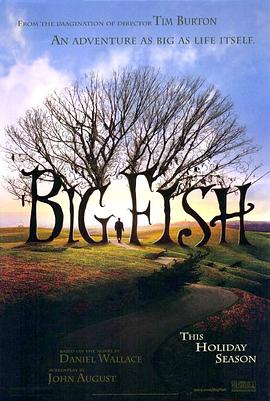

2024年6月 12 条
2024-06-30 23:59:49
 看过 大佬 / Brother ★★★★☆
看过 大佬 / Brother ★★★★☆
异国版“大哥总会有办法的”。最后密林的枪声中北野武选择讲故事推向高潮，同时减弱aniki逝去的反馈。结尾的call back很难让人不落泪。
2024-06-30 00:07:45
 想看 死侍与金刚狼 / Deadpool & Wolverine
想看 死侍与金刚狼 / Deadpool & Wolverine
2024-06-28 00:24:59
想看 有顶天家族2 有頂天家族2 (2017)
2024-06-26 23:55:41
看过 云边有个小卖部 ★★☆☆☆
张嘉佳就算拍了两部电影了这部依旧像是毕设水平。和加多宝看的又一场电影。
2024-06-26 00:01:47

讲故事的父亲最后也成了故事。
2024-06-21 01:08:18
 看过 蓦然回首 / ルックバック ★★★★★
看过 蓦然回首 / ルックバック ★★★★★
「26th SIFF」很有摄影电影的感觉。当藤野站在门口时身后是一扇填满黑色的窗，但是嘈杂的思绪繁浩的黑色。开门后，门里头没了另一种结局的幻想，仅剩宛如月光般的泪水。我总是想到京都纵火案没有发生还是多好，可是蓦然回首，只剩一件羽衣空空落落地挂着。押山老师这次真是极力还原原著，再加上小剧场创新的演绎，真是不枉我难得参加一次电影节。
2024-06-19 22:10:20
看过 疯狂的麦克斯：狂暴女神 / Furiosa: A Mad Max Saga ★★★★☆
在电影院里我两次错过了影片，可是尤其可惜。故事开始变得完善了起来，米勒准备塑造一个庞大的废土世界观，所以影片整体节奏慢了下来，但是风格依旧却不同于《狂暴之路》了。沙漠的夜真是幽幽的蓝色。
2024-06-16 23:10:04
看过 暖暖内含光 / Eternal Sunshine of the Spotless Mind ★★★★☆
转场很是流畅。恐怕注定的人无论怎样结局永远是遇见又相爱吧。
2024-06-14 08:44:58
2024-06-14 08:40:45
说： 第26届上海国际电影节
去看《蓦然回首》咯。（但是最后一排最后一个位置。）
2024-06-12 23:14:05
看过 我们一起摇太阳 ★★★★☆
韩延的画面摄影总是向着故事的，而这次的故事依旧是情感上的瀑布。彭昱畅真的是演得如鱼得水的，从《大象席地而坐》里我就看准他了。影片的结尾是乐观又悲观的，现实得一无是处。
2024-06-12 13:51:57
 看过 葬送的芙莉莲 / 葬送のフリーレン ★★★★★
看过 葬送的芙莉莲 / 葬送のフリーレン ★★★★★
摄影很有纪录片的意思。（分镜与战斗设计很走心了。2024, 2, 13。）（斋藤又把结尾停在了平淡的日子里。2024, 6, 12。）